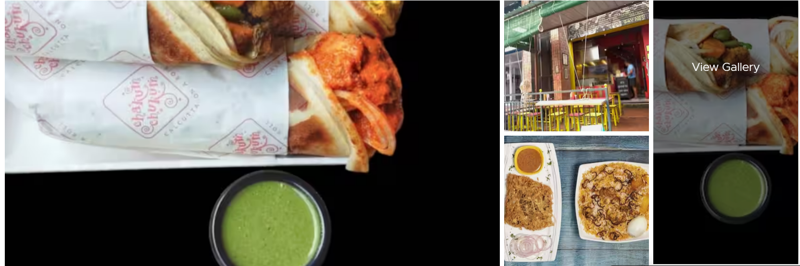

 Faasos - Wraps & Rolls 3.4* 4.0*
Rolls, Wraps, Shawarma Shanti Nagar, Bangalore
Order Online Live track your order 23 min
Best in Rolls
Masala Paneer Tikka Wrap Cheese Melt Paneer Wrap


RS 509 Rs 459
We dont have any pun for paneer, but we do have a lot of Let the good times roll with surprises & flavour with this exciting snack surprises in this exciting snack that we roll into thisnbsp; Cottage cheese is seasoned with select spices & cooked onion, slathered wrap. Fresh marinated paneer (with cooked onion) with creamy, gooey cheese & snuggly wrapped in soft roti.I Caloriesis smoked to
Non-Veg Shawarma & Beverage Meal Open Smoky Chicken Shawarma with Kuboos

RS 509 Rs 459
We dont have any pun for paneer, but we do have a lot of Let the good times roll with surprises & flavour with this exciting snack surprises in this exciting snack that we roll into thisnbsp; Cottage cheese is seasoned with select spices & cooked onion, slathered wrap. Fresh marinated paneer (with cooked onion) with creamy, gooey cheese & snuggly wrapped in soft roti.I Caloriesis smoked to
RELATED TO BURGER KING, COMMERCIAL STREET
Restaurants in Bangalore, Bangalore Restaurants, Commercial Street restaurants, Best Commercial Street restaurants, Central Bangalore restaurants, Quick Bites in Bengaluru, Quick Bites near me, Quick Bites in Central Bangalore, Quick Bites in Commercial Street, in Bengaluru, near me, in Central Bangalore, in Commercial Street, Burger King Menu, Order food online in Commercial Street, Order food online in Bengaluru, Order food online in Central Bangalore, New Year Parties in Bengaluru, Christmas' Special in Bengaluru
RESTAURANTS AROUND COMMERCIAL STREET
Shivajinagar restaurants, Church Street restaurants, Infantry Road restaurants, MG Road restaurants
FREQUENT SEARCHES LEADING TO THIS PAGE
1, burger king commercial street, burger king commercial street bangalore, burger king mg road bangalore, burger king bangalore commercial street